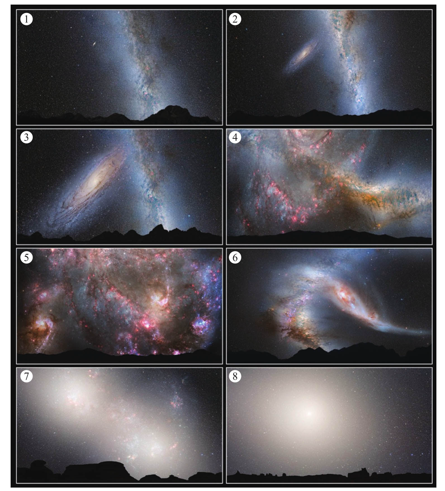

READING × CIVILIZATION
飞向宇宙尽头，也别忘了讲故事
最近读了两本很有意思的书。一本是和王牧熙一起看的《宇宙奥德赛：飞向宇宙尽头》，另一本是我自己读的《最后一个讲故事的人》。
起初，我并没有觉得它们之间有什么联系。一本讲星系、黑洞和可观测宇宙，另一本讲记忆、故事和人类文明。但读完以后，我发现它们有很有意思的微妙联系。
宇宙把人的尺度拉得很小
《宇宙奥德赛：飞向宇宙尽头》从银河系出发，经过本星系群、室女座超星系团、拉尼亚凯亚超星系团，最终抵达可观测宇宙的边界。
其中让我和王牧熙看得如痴如醉的，是仙女星系与银河系在亿万年后的相撞。到那时，两个星系将在引力作用下彼此穿越、重新组合，并可能出现异常壮观的星暴。大量新生恒星会像焰火一样，照亮未来的夜空。

想到这里，会突然感觉人的尺度实在太小了。
我们习惯用几年规划生活，用几十年理解人生，但星系的相遇以亿万年计算。我们今天看到的星光，可能来自早已消失的恒星；我们认为稳定不变的银河系，其实也一直在运动、演化和走向新的形态。
宇宙并不按照人的时间尺度运行。可也正因为生命如此短暂，我们此刻能够一起抬头、理解一点宇宙、分享同一种惊叹，才显得格外珍贵。
如果记忆消失，我们还是原来的人吗
《最后一个讲故事的人》讲的是另一种遥远。
在唐娜·巴尔巴·伊格拉的故事中，人类为了逃离即将毁灭的地球，乘坐飞船前往新的星球。漫长的星际航行之后，彼得拉醒来，却发现飞船上的统治者已经抹去了人们关于地球的记忆。她成了最后一个记得故乡、家人和古老故事的人。
这本书真正追问的并不是人类能否抵达另一个星球，而是：
当我们抵达宇宙深处以后，还有什么能够证明我们仍然是“人”？
如果失去了关于故乡的记忆，不再记得父母和亲人，也不再拥有那些代代相传的故事，那么即使人类的身体延续了下来，延续下来的还是原来的文明吗？
故事看起来没有飞船、能源和知识程序那么“有用”，却保存着技术无法代替的东西：一个民族如何理解世界，一个家庭如何记住彼此，一个人如何知道自己是谁、又从哪里来。
故事不只是消遣，它也是记忆的容器。我们通过故事保存那些无法写进公式的经验，也通过故事把一个人的感受传递给另一个人。
科学带我们抵达远方，故事告诉我们为何出发
把两本书放在一起，一本不断扩大世界的尺度，一本努力守住人的记忆。
前者回答“宇宙有多大”，后者追问“如果失去了故事、差异和过去，人类还剩下什么”。科学帮助我们认识星系、制造飞船、抵达更远的地方；故事则提醒我们为什么出发，以及抵达以后希望成为什么样的人。
我后来想到，和王牧熙一起读《宇宙奥德赛》这件事，本身也是一次讲故事。
我们不可能亲眼看到银河系与仙女星系相撞，但王爽老师把人类对宇宙的观察写成了一段旅程，于是一个遥远到难以想象的未来，能够在我们共同阅读的这个晚上，变成脑海中的星光和焰火。
也许这就是故事的意义：它让一个人看见的世界，可以被另一个人继续看见；让一代人的好奇、记忆和选择，能够越过有限的生命，传到更远的地方。
人类也许终有一天会离开地球，飞向很远的星系。那时，我们当然需要更先进的飞船、更强大的能源和更丰富的知识。
但我们也需要有人记得地球是什么样子，记得我们从哪里出发，记得那些曾经爱过我们、陪伴过我们的人。
飞向宇宙尽头，也别忘了讲故事。
因为科学决定我们能走多远，故事决定走到那里的人还是不是我们。